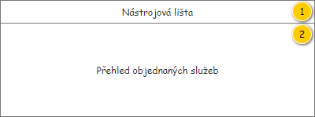
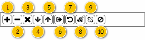
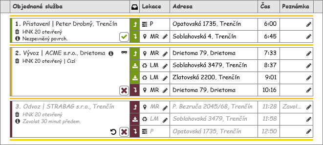

Stručný popis
Jedná se o přehled zobrazující Objednané služby, které jsou přiřazeny k odpovídající Realizaci denního výkonu, kdy je samotná Realizace denního výkonu předána jako vstupní hodnota. Pokud není potvrzena realizace, je možné se zobrazenými Objednanými službami dále pracovat – přidávat je a odebírat, umožnit opakované naplánování a podobně.
Uživatelské rozhraní
Rozložení
Drátový diagram

Přehled UI komponent
| Callout | Skupina |
|---|---|
| 1 | Nástrojová lišta |
| 2 | Přehled objednaných služeb |
Náhled
Dále je uveden drátový diagram s náhledem celé obrazovky.
Poznámka: V rámci drátového diagramu nemusí Objednané služby v přehledu odpovídat těm na mapě.

Nástrojová lišta
Nástrojová lišta je zobrazena pouze v případě, kdy jsou splněny všechny dále uvedené podmínky:
- Uživatel má právo na editaci Realizací denního výkonu (EDIT_RP_ROUTES_CONFIRMATION, viz Oprávnění na typ entity).
- Odpovídající Denní výkon je v jednom z uvedených stavů (atribut Stav entity Denní výkon – atribut Denní výkon entity Realizace denního výkonu):
- Ke kontrole.
Drátový diagram

Přehled UI komponent
Pokud uživatel vjede myší na prvek nástrojové lišty, je zobrazen ToolTip. V rámci ToolTipu, pokud není uvedeno jinak, je zobrazen text ve sloupci Komponenta.
| Callout | Komponenta | Nadpis | Typ komponenty | Příklad hodnoty | Hodnota | Výchozí hodnota | Formát | Zpřístupněná | Viditelná | Chování | Validace | Poznámka |
|---|---|---|---|---|---|---|---|---|---|---|---|---|
| 1 | Přidání objednané služby | – | Button
| – | – | – | – | Vždy | Vždy | Spustí , na vstup UC jsou předány následující hodnoty:
| – | – |
| 2 | Odebrání dodatečně přidané objednané služby | – | Button
| – | – | – | – | Vždy | Pokud je označen Panel obsluhy objednané služby. Pokud odpovídající Objednaná služba nebyla obsažena v rámci odpovídajícího Denního výkonu, je tedy splněna jedna z uvedených podmínek:
Pokud z odpovídající Objednané služby nevznikla v rámci kontroly realizace nová Objednaná služba (hodnota atributu Způsob přeplánování je NULL). | Spustí , na vstup UC jsou předány následující hodnoty:
| – | – |
| 3 | Zrušení objednané služby | – | Button
| – | – | – | – | Vždy | Pokud je označen Panel obsluhy objednané služby. Pokud z odpovídající Objednané služby nevznikla v rámci kontroly realizace nová Objednaná služba (hodnota atributu Způsob přeplánování je NULL). | Spustí , na vstup UC jsou předány následující hodnoty:
| – | – |
| 4 | Posunutí objednané služby dolů | – | Button
| – | – | – | – | Vždy | Pokud je označen Panel obsluhy objednané služby. Pokud není Panel obsluhy objednané služby v jako poslední v rámci přehledu. | Spustí , na vstup UC jsou předány následující hodnoty:
| – | – |
| 5 | Posunutí objednané služby nahoru | – | Button
| – | – | – | – | Vždy | Pokud je označen Panel obsluhy objednané služby. Pokud není Panel obsluhy objednané služby v jako první v rámci přehledu. | Spustí , na vstup UC jsou předány následující hodnoty:
| – | – |
| 6 | Vložení objednané služby na jinou realizaci denního výkonu | – | Button
| – | – | – | – | Vždy | Pokud je označen Panel obsluhy objednané služby. Pokud z odpovídající Objednané služby nevznikla v rámci kontroly realizace nová Objednaná služba (hodnota atributu Způsob přeplánování je NULL). | Spustí , na vstup UC jsou předány následující hodnoty:
| – | – |
| 7 | Přeplánování objednané služby | – | Button
| – | – | – | – | Vždy | Pokud je označen Panel obsluhy objednané služby. Pokud z odpovídající Objednané služby nevznikla v rámci kontroly realizace nová Objednaná služba (hodnota atributu Způsob přeplánování je NULL). | Spustí , na vstup UC jsou předány následující hodnoty:
| – | – |
| 8 | Částečné přeplánování objednané služby s místem dočasného uložení | – | Button
| – | – | – | – | Vždy | Pokud je označen Panel obsluhy objednané služby. Pokud z odpovídající Objednané služby nevznikla v rámci kontroly realizace nová Objednaná služba (hodnota atributu Způsob přeplánování je NULL). Pokud odpovídající Objednaná služba umožňuje provedení akce – jsou obsaženy alespoň dvě Lokace objednané služby (atribut Lokace objednané služby), které jsou důležité z pohledu monitoringu realizace:
| Spustí , na vstup UC jsou předány následující hodnoty:
| – | – |
| 9 | Částečné přeplánování objednané služby | – | Button
| – | – | – | – | Vždy | Pokud je označen Panel obsluhy objednané služby. Pokud z odpovídající Objednané služby nevznikla v rámci kontroly realizace nová Objednaná služba (hodnota atributu Způsob přeplánování je NULL). Pokud odpovídající Objednaná služba umožňuje provedení akce – jsou obsaženy alespoň dvě Lokace objednané služby (atribut Lokace objednané služby), které jsou důležité z pohledu monitoringu realizace:
| Spustí , na vstup UC jsou předány následující hodnoty:
| – | – |
| 10 | Zrušení navazující objednané služby | – | Button
| – | – | – | – | Vždy | Pokud je označen Panel obsluhy objednané služby. Pokud z odpovídající Objednané služby vznikla v rámci kontroly realizace nová Objednaná služba (hodnota atributu Způsob přeplánování je různá od NULL).
| Spustí , na vstup UC jsou předány následující hodnoty:
| – | – |
Přehled objednaných služeb
Drátový diagram

Přehled UI komponent
Sloupce
| Callout | Komponenta | Nadpis | Poznámka |
|---|---|---|---|
| 1 | Objednaná služba | Objednaná služba | – |
| 2 | Akce v lokaci | Ikona: ra-milestone. | Po najetí myši na ikonu je zobrazen ToolTip s následujícím textem: Akce v lokaci. |
| 3 | Typ lokace | Lokace | – |
| 4 | Pořadí lokace | Pořadí lokace objednané služby | |
| 5 | Adresa lokace | Adresa | – |
| 6 | Skutečný čas příjezdu do lokace | Čas | Po najetí myši na nadpis sloupce je zobrazen ToolTip s následujícím textem: Skutečný čas příjezdu do lokace. |
| 7 | Poznámka k lokaci | Poznámka | – |
Poznámka:
- Jedná se pouze o společnou hlavičku přehledu.
- Nejsou dostupné funkce pro práci s jednotlivými sloupci: Řazení, Změna pozice, Změna šířky, Skrytí, Filtr.
Služby
| Callout | Hodnota | Poznámka |
|---|---|---|
| A | Entita Objednaná služba – jedná se o všechny takové Objednané služby, jejichž hodnota atributu Realizace denního výkonu dopovídá Realizaci denního výkonu načtené v rámci obrazovky. | Jednotlivé Objednané služby jsou zobrazeny pomocí Panelu obsluhy objednané služby a jsou řazeny dle hodnoty atributu Pořadí v kontrole realizace – vzestupně. |
Interakce
V rámci přehledu jsou dostupné dvě základní interakce – možnost změny pozice (pořadí) položek pomocí režimu Drag&Drop a zvýraznění Objednané služby po jejím označení v přehledu. Obě interakce jsou pak dále popsány.
Změna pozice položky
Uživatel může pomocí režimu Drag&Drop měnit pozici Objednané služby v rámci přehledu. Funkce je pak dostupná pouze v případě, kdy je odpovídající Denní výkon v jednom z uvedených stavů (atribut Stav entity Denní výkon – atribut Denní výkon entity Realizace denního výkonu):
- Ke kontrole.
Ke spuštění režimu dochází ve chvíli, kdy uživatel stiskne levé tlačítko myši v rámci Panelu objednané služby (mimo obsažená tlačítka a podobně) a drží ho. Následně se zobrazí místa (Drop zóny, viz obrázek), kam je možné Objednanou službu umístit – viz obrázek. Uživatel tedy stále drží levé tlačítko myši a v rámci režimu Drag&Drop hledá nové umístění pro Objednané služby. Jakmile najede na požadované místo a uvolní levé tlačítko myši, režim Drag&Drop je ukončen a je spuštěn , na vstup jsou pak předány následující hodnoty:
- Realizace denního výkonu: Realizace denního výkonu, která je načtena v rámci obrazovky.
- Objednaná služba: Právě označená Objednaná služba.
- Pořadí: nové pořadí Objednané služby v rámci Realizace denního výkonu – odpovídá pozici uživatelem zvolené Drop zóny, z které je získáno nové pořadí Objednané služby.
Pokud uživatel uvolní levé tlačítko myši mimo dostupné Drop zóny, je režim Drag&Drop ukončen bez dalších akcí.
Pořadí Objednané služby je pak možné měnit libovolně v rámci přehledu.

Označení objednané služby
Uživatel může pomocí kliknutí levého tlačítka myši na Panel obsluhy objednané služby označit požadovanou Objednanou službu, což se projeví zvýrazněním odpovídajících Lokací objednané služby v rámci mapy.
K označení Objednané služby pak dojde jak po kliknutí na Panel objednané služby (mimo obsažená tlačítka a podobně), tak na řádek s informacemi o obsažených Lokacích objednané služby.
Chování
Panel obsluhy objednané služby
Panel je tvořen jednoduchou tabulkou bez hlavičky, která zobrazuje základní informace o Objednané službě a v ní obsažených Lokacích objednané služby (poznámka: nejsou dostupné funkce pro práci s jednotlivými sloupci: Řazení, Změna pozice, Změna šířky, Skrytí, Filtr).
Jednotlivé řádky panelu jsou pak získány jako Lokace objednané služby, které nás zajímají z pohledu monitoringu a kontroly realizace, z odpovídající Objednané služby – atribut Monitoring realizace entity Lokace objednané služby nabývá hodnoty TRUE.
Poznámka: Společná hlavička pro všechny obsažené panely již byla popsána dříve.
Drátový diagram

Přehled UI komponent
| Callout | Komponenta | Nadpis | Typ komponenty | Příklad hodnoty | Hodnota | Výchozí hodnota | Formát | Zpřístupněná | Viditelná | Chování | Validace | Poznámka |
|---|---|---|---|---|---|---|---|---|---|---|---|---|
| 1 | Objednaná služba | – | Panel objednané služby | – | Entita Objednaná služba. | – | – | – | Vždy | – | – | – |
| 2 | Akce v lokaci | – | Label | Vyzvednout | Entita Lokace objednané služby. | – |
| – | Vždy | – | – | – |
| 3 | Typ lokace | – | Label | MR | Entita Lokace objednané služby. | – | Pokud je komponenta zpřístupněna pro editaci, je zobrazeno tlačítko editace:
| Pouze přes dostupná tlačítka:
Podmínky zpřístupnění položky se liší dle hodnoty atributu Typ lokace odpovídající Lokace objednané služby:
| Vždy | Liší dle hodnoty atributu Typ lokace odpovídající Lokace objednané služby:
| – | – |
| 4 | Pořadí lokace | - | Label | 1 | Pořadí lokace objednané služby | - | číslo | Vždy | ||||
| 5 | Adresa lokace | – | Label | Soblahovská 4, Trenčín | Entita Adresa – atribut Adresa entity Lokace objednané služby. | – | Pokud není dostupné Číslo orientační:
Pokud není dostupné Číslo popisné:
| – | Vždy | – | – | – |
| 6 | Skutečný čas příjezdu do lokace | – | Label | 6:45 | Entita Obsluha lokace objednané služby – atribut Obsluha lokace objednané služby entity Lokace objednané služby. | – | Hodnota nemusí být k dispozici, v takovém případě je zobrazena prázdná buňka. | – | Vždy | – | – | – |
| 7 | Poznámka k lokaci | – | Label | Zákazník informován o nedodržení časového okna. | Entita Obsluha lokace objednané služby – atribut Obsluha lokace objednané služby entity Lokace objednané služby. | – | Pokud je komponenta zpřístupněna pro editaci a zároveň obsahuje nějakou hodnotu, je zobrazeno tlačítko pro odebrání hodnoty:
Pokud je komponenta zpřístupněna pro editaci, je zobrazeno tlačítko editace:
| Pouze přes dostupná tlačítka:
Pokud má uživatel právo na editaci Realizací denního výkonu (EDIT_RP_ROUTES_CONFIRMATION, viz Oprávnění na typ entity). | Vždy | Spustí , na vstup UC jsou předány následující hodnoty:
| – | – |
Chování
Zobrazení akce v lokaci
Zobrazení akce v Lokaci objednané služby (atribut Akce) je znázorněno ikonou:
- Vyzvednout: Akce v lokaci/Vyzvednout,
- Umístit: Akce v lokaci/Umístit,
- Vyprázdnit: Akce v lokaci/Vyprázdnit,
- Navštívit: Akce v lokaci/Navštívit.
Po najetí myší na ikonu je zobrazen ToolTip s textem, který odpovídá hodnotě atributu Akce entity Lokace objednané služby.
Jednotlivé Lokace objednané služby jsou graficky rozlišeny dle toho, zda již došlo k jejich obsluze. Vyhodnocení probíhá pro každou z nich následovně:
- Systém nalezne odpovídající Obsluhu lokace objednané služby – hledá takový záznam, který splňuje všechny dále uvedené podmínky zároveň:
- Hodnota atributu Lokace objednané služby odpovídá právě zkoumané Lokaci objednané služby.
- Systém nastaví odpovídající barvu – vyhodnocení probíhá dle atributu Je realizována získané Obsluhy lokace objednané služby (viz krok 1):
- TRUE: Je použita barva Realizace lokace/Obslouženo.
- FALSE: Je použita barva Realizace lokace/Neobslouženo.
Zobrazení typu lokace
Zobrazení typu Lokace objednané služby (atribut Typ lokace) je zkratkou, která je doplněna o ikonu – viz tabulka.
| Typ lokace | Zkratka | Ikona | Poznámka |
|---|---|---|---|
| Místo realizace | MR | Typ lokace/Místo realizace | – |
| Likvidační místo, Výchozí likvidační místo | LM | Typ lokace/Likvidační místo | – |
| Provozovna | P | Typ lokace/Provozovna | – |
| Jiné | – | – | Nemůže nastat. |
| Časový interval | – | – | Nemůže nastat. |
| Místo dočasného uložení | MDU | Typ lokace/Místo dočasného uložení | – |
Po najetí myší na ikonu či zkratku je zobrazen ToolTip s textem, který odpovídá hodnotě atributu Typ lokace entity Lokace objednané služby.
Panel objednané služby
Panel vychází z 101UI05: Panel objednané služby, tomu odpovídá i dále uvedený popis.
Drátový diagram

Přehled UI komponent
| Callout | Komponenta | Nadpis | Typ komponenty | Příklad hodnoty | Hodnota | Výchozí hodnota | Formát | Zpřístupněná | Viditelná | Chování | Validace | Poznámka |
|---|---|---|---|---|---|---|---|---|---|---|---|---|
| 1 | Barevný pruh pro rozlišení předpokládaného stavu realizace | – | – | – | Entita Objednaná služba. | – | Rozlišení předpokládaného stavu realizace | – | Vždy | – | – | – |
| 2 | Pořadí objednané služby | – | Label | 3. | Entita Objednaná služba. | – | – | Vždy | – | – | Jedná se o pořadové číslo Objednané služby v rámci Realizace denního výkonu. | |
| 3 | Identifikace objednaného úkonu | – | Label | Přistavení | STRABAG s.r.o. | Entita Objednaný úkon – atribut Objednaný úkon entity Objednaná služba. | – | Viz Identifikace objednaného úkonu.
| – | Vždy | – | – | – |
4 | Identifikace objednané nádoby | Ikona: ra-trash | Label | 17 20 13 | HNK 16 krytý (cizí) | Entita Objednaná služba. | – | Viz Identifikace objednané nádoby. | – | Vždy | – | – | – |
| 5 | Časové okno | Ikona: ra-clock | Label | 6:30-7:30 | Entita Objednaná služba. | – | <Čas realizace od>-<Čas realizace od> | – | Pokud je splněna alespoň jedna z uvedených podmínek:
| – | – | – |
| 6 | Poznámka | Ikona: ra-info-full | Label | Zavolat 30 minut předem. | Entita Objednaná služba. | – | Pokud nastane situace, že délka hodnoty přesahuje délku řádku v rámci panelu, je zobrazena pouze taková část textu, která se vejde právě na jeden řádek. Na konci zobrazené části textu je pak vložen znak „…“ (ALT+0133), který naznačuje, že není zobrazen celý text. Po najetí myši na tento řádek dojde k zobrazení bublinkové nápovědy s úplným textem. | – | Pokud je hodnota různá od NULL. | – | – | – |
| 7 | Identifikace objednávky | – | – | Objednávka: 1131-001028 | Entita Objednávka – atribut Objednávka entity Položka objednávky – atribut Položka objednávky entity Objednaná nádoba – atribut Objednaná nádoba entity Objednaný úkon – atribut Objednaný úkon entity Objednaná služba. | – | Objednávka: <Číslo objednávky>
| – | Pokud je hodnota různá od NULL. | Pokud je zobrazena ikona a uživatel na ni najede myší, je zobrazena bublinková nápověda s uvedenou hodnotou. | – | Hodnota se zobrazuje po najetí myši na ikonu ve formě bublinkové nápovědy. |
| 8 | Poznámka k místu realizace | – | – | Nezpevněný povrch. | Entita Položka objednávky – atribut Položka objednávky entity Objednaná nádoba – atribut Objednaná nádoba entity Objednaný úkon – atribut Objednaný úkon entity Objednaná služba. | – |
| – | Pokud je hodnota různá od NULL. | Pokud je zobrazena ikona a uživatel na ni najede myší, je zobrazena bublinková nápověda s uvedenou hodnotou. | – | Hodnota se zobrazuje po najetí myši na ikonu ve formě bublinkové nápovědy. |
| 9 | Kontakt k místu realizace | – | – | Pan Konečný, 0902 123 456. | Entita Položka objednávky – atribut Položka objednávky entity Objednaná nádoba – atribut Objednaná nádoba entity Objednaný úkon – atribut Objednaný úkon entity Objednaná služba. | – |
| – | Pokud je hodnota různá od NULL. | Pokud je zobrazena ikona a uživatel na ni najede myší, je zobrazena bublinková nápověda s uvedenou hodnotou. | – | Hodnota se zobrazuje po najetí myši na ikonu ve formě bublinkové nápovědy. |
| 10 | Indikace použití přívěsu | – | – | – | Entita Položka denního výkonu – atribut Položka denního výkonu entity Objednaná služba. | – | Hodnota je reprezentována ikonou, která je zobrazena dle toho, zda byl v rámci Položky denního výkonu použit přívěs (atribut Přívěs nabývá hodnoty TRUE).
V opačném případě není ikona zobrazena vůbec. | – | Pokud má být zobrazena ikona. | Po najetí myši na ikonu je zobrazena bublinková nápověda s následujícím textem:
| – | Pokud byla Objednaná služba přidána dodatečně v rámci potvrzení realizace, není Položka denního výkonu k dispozici. |
| 11 | Indikace akce provedené s objednanou službou | – | – | – | Entita Objednaná služba. | – | Zobrazení akce provedené s objednanou službou | – | Pokud má být zobrazena ikona. | Zobrazení akce provedené s objednanou službou | – | – |
| 12 | Nastavení realizace objednané služby | – | Button | – | Entita Objednaná služba. | – | Hodnota je reprezentována ikonou nastavenou dle realizace Objednané služby (atribut Realizována):
| Pokud má uživatel právo na editaci Realizací denního výkonu (EDIT_RP_ROUTES_CONFIRMATION, viz Oprávnění na typ entity). Pokud je odpovídající Denní výkon v jednom z uvedených stavů (atribut Stav entity Denní výkon – atribut Denní výkon entity Realizace denního výkonu):
| Vždy | Nastavení realizace objednané služby | – | – |
Rozlišení předpokládaného stavu realizace
V rámci barevného pruhu je zobrazena informace, jak proběhla realizace odpovídající Objednané služby. Barva tohoto pruhu pak odpovídá stavu realizace jednotlivých Lokací objednané služby, které jsou v Objednané službě obsaženy (atribut Lokace objednané služby) a které jsou zajímavé z pohledu monitoringu a kontroly realizace. Jsou tedy získány takové Lokace objednané služby, které splňují uvedené podmínky:
- hodnota atributu Provést je rovna TRUE,
- hodnota atributu Monitoring realizace je rovna TRUE.
Jednotlivé Lokace objednané služby jsou pak vyhodnoceny z pohledu jejich realizace. Vyhodnocení pak probíhá následovně:
- Systém nalezne odpovídající Obsluhy lokací objednané služby – hledá takové záznamy, které splňují všechny dále uvedené podmínky zároveň:
- Hodnota atributu Lokace objednané služby odpovídá jedné ze získaných Lokaci objednané služby.
- Systém nastaví odpovídající barvu – vyhodnocení probíhá dle atributu Je realizována získaných Obsluh lokací objednané služby (viz krok 1):
- Pokud je u všech získaných záznamů nastavena tato hodnota na TRUE: je použita barva Realizace lokace/Obslouženo.
- Pokud je u všech získaných záznamů nastavena tato hodnota na FALSE: je použita barva Realizace lokace/Neobslouženo.
- Jinak: je použita barva Realizace lokace/Částečně obslouženo.
Zobrazení akce provedené s objednanou službou
S Objednanou službou může být v rámci potvrzení realizace provedeno několik akcí, ty je v případě jejich uskutečnění potřeba naznačit. K tomuto účelu je použita ikona, která odpovídá konkrétní provedené akci, viz tabulka. S Objednanou službou pak může být provedena maximálně jedna z uvedených akcí zároveň. Vstupem pro rozhodování je konkrétní Objednaná služba.
| Akce | Zobrazení akce | Chování |
|---|---|---|
| Přeplánování objednané služby | Hodnota je reprezentována ikonou, která je zobrazena dle toho, zda došlo k přeplánování Objednané služby (hodnota atributu Způsob přeplánování je rovna Přeplánováno).
V opačném případě není ikona zobrazena vůbec. | Po najetí myši na ikonu je zobrazena bublinková nápověda s následujícím textem:
|
Částečné přeplánování objednané služby s místem dočasného uložení | Hodnota je reprezentována ikonou, která je zobrazena dle toho, zda došlo k přeplánování Objednané služby (hodnota atributu Způsob přeplánování je rovna Místo dočasného uložení).
V opačném případě není ikona zobrazena vůbec. | Po najetí myši na ikonu je zobrazena bublinková nápověda s následujícím textem:
|
Částečné přeplánování objednané služby | Hodnota je reprezentována ikonou, která je zobrazena dle toho, zda došlo k přeplánování Objednané služby (hodnota atributu Způsob přeplánování je rovna Rozděleno).
V opačném případě není ikona zobrazena vůbec. | Po najetí myši na ikonu je zobrazena bublinková nápověda s následujícím textem:
|
| Úplné zrušení realizace objednané služby | Hodnota je reprezentována ikonou, která je zobrazena dle toho, zda došlo k přeplánování Objednané služby (hodnota atributu Způsob přeplánování je rovna Zastaveno).
V opačném případě není ikona zobrazena vůbec. | Po najetí myši na ikonu je zobrazena bublinková nápověda s následujícím textem:
|
| Objednaná služba realizovaná mimo plán | Hodnota je reprezentována ikonou, která je zobrazena dle toho, zda byla Objednaná služba realizována mimo původní plán – je tedy splněna jedna z uvedených podmínek:
Pokud je splněna podmínka, je zobrazena ikona:
V opačném případě není ikona zobrazena vůbec. | Po najetí myši na ikonu je zobrazena bublinková nápověda s následujícím textem:
|
Nastavení realizace objednané služby
Ve výchozím stavu se tlačítko nastaví dle uvedeného atributu Objednané služby. Pokud je tlačítko zpřístupněno, je možné s jeho pomocí hodnotu tohoto atributu změnit, a to kliknutím na tlačítko. Provedená změna se však v rámci Objednané služby projeví až ve chvíli, kdy jsou uloženy provedené změny. Do té doby je nutné v rámci formuláře pracovat s pomocnou proměnnou. Pokud tedy uživatel na tlačítko klikne, dojde ke změně jeho stavu, ale změna se zatím neprojeví v Objednané službě.
Kliknutím na tlačítko je spuštěn , na vstup UC jsou pak předány následující hodnoty:
- Realizace denního výkonu: Realizace denního výkonu, která je načtena v rámci obrazovky.
- Obsluha lokace objednané služby: Obsluha lokace objednané služby, u které je požadováno nastavení realizace.
Grafický návrh
Revize
12. 12. 2025: Eva Šťastná
| Odkaz | Stručný popis změny/doplnění |
|---|---|
| Přehled objednaných služeb | Přehled objednaných služeb - přidání sloupečku Pořadí (označeno barevně) |
| Panel obsluhy objednané služby | Panel obsluhy - přidání sloupečku Pořadí (označeno barevně) |
22. 2. 2024: Tomáš Nadrchal
| Odkaz | Stručný popis změny/doplnění |
|---|---|
| Nástrojová lišta | Doplnění nového typu lokace (naznačeno růžově). |
| Panel obsluhy objednané služby | Doplnění nového typu lokace, pro který je k dispozici editace souřadnic (naznačeno růžově). |
| Zobrazení typu lokace | Doplnění nového typu lokace (naznačeno růžově). |
11. 11. 2023: Tomáš Nadrchal
| Odkaz | Stručný popis změny/doplnění |
|---|---|
| Zobrazení akce v lokaci | Revize způsobu zobrazení informace o realizaci lokace (naznačeno modře). |
| Rozlišení předpokládaného stavu realizace | Revize způsobu zobrazení informace o realizaci lokace (naznačeno modře). |
28. 3. 2021: Tomáš Nadrchal
Provedeny změny v rámci celého dokumentu (naznačeno modře). Viz ID-040: Násobné rozdělení objednané služby.
Poznámka: Došlo i ke změně pořadí tlačítek nástrojové lišty (viz Nástrojová lišta).
13. 1. 2020: Tomáš Nadrchal
| Odkaz | Stručný popis změny/doplnění |
|---|---|
| Panel obsluhy objednané služby | Doplněno tlačítko pro možnost editace souřadnic (naznačeno modře). |
7. 10. 2019: Tomáš Nadrchal
| Odkaz | Stručný popis změny/doplnění |
|---|---|
| Panel objednané služby | Aktualizace chování dle požadavků pro M10 (naznačeno modře). |
2. 7. 2019: Tomáš Nadrchal
| Odkaz | Stručný popis změny/doplnění |
|---|---|
| Panel objednané služby | Doplnění příznaku pro Objednanou službu realizovanou mimo plán – komponenta 11 (naznačeno modře). |
17. 6. 2019: Tomáš Nadrchal
| Odkaz | Stručný popis změny/doplnění |
|---|---|
| Panel objednané služby | Doplnění příznaku pro Objednanou službu spolu s ToolTipy (naznačeno modře). |